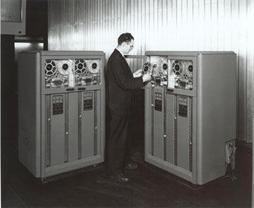

Лев Левин
Запись цифровых данных на магнитной ленте используется уже более полувека, еще с эпохи первых ЭВМ, но ленточные накопители до сих пор остаются наиболее выгодными по стоимости хранения запоминающими устройствами. По данным IDC, в 2002 г. во всем мире было продано 2,2 млн накопителей на магнитной ленте (НМЛ), и, как считают аналитики этой исследовательской группы, несмотря на появление в прошлом году систем резервного копирования на основе относительно дешевых жестких дисков, хранение данных на магнитной ленте все же остается лучшим решением для защиты критически-важных данных в долговременной перспективе. Совершенствование технологий, применяемых для создания НМЛ, обеспечивает тот уровень емкости, надежности и быстродействия, который требуется для обработки все возрастающего объема информации.
В настоящее время существует несколько десятков форматов записи данных на магнитную ленту, однако широко применяется только часть из них. Чтобы разобраться в особенностях нынешних форматов НМЛ, потребуется сделать небольшой экскурс в историю развития этой технологии.
Краткая история НМЛ
В 1928 г. в Германии доктор Фриц Пфлюмер запатентовал способ нанесения магнитных частиц на пленку или бумагу, а четверть века спустя, уже в США, корпорация IBM (http://www.ibm.com) выпустила в свет первую систему записи информации на магнитной ленте, производимой компанией 3M (http://www.3m.com) и имевшей ширину полдюйма. Лента перематывалась при чтении и записи с одной бобины на другую, как и в получивших тогда распространение двухкатушечных бытовых магнитофонах. В первом НМЛ использовался так называемый линейно-серпантинный метод записи - на ленту наносилось большое число магнитных дорожек, и она протягивалась специальным лентопротяжным механизмом мимо неподвижной многоканальной магнитной головки. Головка выполняла считывание (или запись) на части дорожек, а при достижении конца ленты переходила на следующую группу дорожек - лентопротяжный механизм протягивал ленту в обратном направлении. Процесс повторялся до тех пор, пока не были охвачены все дорожки. В 1960-х и 1970-х гг. эта технология совершенствовалась за счет увеличения числа дорожек, плотности размещения битов и скорости протяжки ленты.
|  | IBM 726 - первый накопитель на магнитной ленте.
|
Однако уже в конце 1950-х был предложен и альтернативный способ записи на магнитной ленте. Это было время бурного роста телевидения - потребовалась новая технология записи телевизионных передач, поскольку использовавшаяся в магнитофонах линейная запись не обладала емкостью, необходимой для хранения видеоинформации. В 1956 г. компания Ampex (http://www.ampex.com) представила первый видеомагнитофон с наклонно-строчной записью, при которой записывающие головки располагались на вращающемся цилиндре, расположенном под углом 7° к ленте. В результате такой записи дорожки оказывались наклонены по отношению к краям ленты.
Разработка Ampex обеспечивала повышение плотности записи в четыре раза по сравнению с традиционной линейной, но НМЛ на ее основе получались более дорогими, поэтому первое время она использовалась в основном в телевидении и кино. Такое положение сохранялось до середины 1970-х, когда благодаря сокращению затрат на производство видеомагнитофоны с наклонной записью вышли на рынок потребительской электроники.
Между тем в 1970-х и начале 1980-х гг. произошли важные изменения и в линейной технологии, где от механизма на основе двух бобин перешли к конструкции с однокатушечным картриджем, лентой шириной 1/2 дюйма и несъемным приемным барабаном в самом приводе. Эту технологию, получившую название Digital Linear Tape (DLT), разработали в 1984 г. инженеры корпорации Digital Equipment (DEC) для микрокомпьютеров MicroVAX II. Применение DLT так и ограничивалось миром DEC до тех пор, пока эта корпорация десять лет спустя не продала права на нее компании Quantum (http://www.quantum.com), специализировавшейся на производстве жестких дисков.
В 1972 г. корпорация 3M представила еще одну линейную технологию под названием QIC (quarter-inch tape cartridge - четвертьдюймовый ленточный картридж), предназначенную для хранения данных телекоммуникационных систем и систем сбора информации. В QIC используется двухкатушечный картридж, напоминающий обычную аудиокассету. Обе катушки приводятся в движение встроенным в картридж специальным ремнем, а картридж имеет лишь небольшое окошко для контакта головки считывания/записи с магнитной лентой. В конструкции предусмотрен ролик, который сообщается с приводным ремнем внутри картриджа и с тонвалом привода. При такой конструкции лентопротяжный механизм имеет только две движущиеся детали - головку и тон, что обеспечивает высокую надежность его работы.
Хотя приводы QIC использует ту же линейно-строчную запись, что и предшественники, их характеристики улучшились за счет более совершенных материалов ленты, увеличения числа дорожек (их стало 47) и плотности размещения битов.
Относительно недорогие накопители QIC вскоре стали широко применяться для хранения и переноса данных, особенно при обслуживании отдельных ПК. Тем не менее эта технология так и не смогла обеспечить большую емкость кассеты, а также достаточные показатели быстродействия и надежности. Кроме того, популярность QIC привела к тому, что на ее базе было разработано более сотни форматов НМЛ, совместимость которых далеко не всегда гарантировалась.
В первой половине 1980-х в связи с распространением локальных сетей и мини-ЭВМ резко возросли требования к емкости и скорости ленточных накопителей. Для использования в мини-компьютерах традиционные линейные устройства записи с двумя бобинами не подходили из-за слишком больших габаритов и высокой цены, а накопители QIC - из-за низкой емкости и скорости работы. Разработанные DEC однокатушечные накопители в то время были ориентированы на обслуживание ее собственных систем microVAX и несовместимы с компьютерами других производителей.
Именно тогда группа инженеров из корпорации Storage Technology (http://www.storagetek.com) пришла к выводу, что используемый в бытовых видеомагнитофонах формат записи на 8-мм пленку VHS может применяться и для записи цифровых данных. В 1985 г. они основали компанию Exabyte (http://www.exabyte.com) для разработки и продвижения на рынке доступных по цене и обладающих высокой емкостью решений для резервного копирования на основе наклонно-строчной записи.
В 1987 г. Exabyte совместно с японской корпорацией Sony (http://www.sony.co.jp, http://www.sony.net) выпустила на рынок накопителей для Unix-систем первый 8-мм наклонно-строчный НМЛ (Sony производила для него механические компоненты). В этом устройстве инженеры компании дополнили технологию видеомагнитофонов своими решениями, обеспечивавшими целостность цифровых данных. В числе прочего они применили механизм чтения после записи (read-after-write), который гарантирует отсутствие ошибок при записи данных на ленту.
Первый продукт Exabyte имел емкость 2,4 Гбайт и скорость передачи данных 250 Кбайт/с, значительно превосходя по этим показателям практически все другие форматы НМЛ. В первой половине 1990-х годов он стал фактическим стандартом для Unix-систем и мини-компьютеров.
Успех 8-мм накопителей Exabyte вдохновил Hewlett-Packard (http://www.hp.com) и Sony на создание формата наклонно-строчных НМЛ с 4-мм кассетами, получившего название Digital Data Storage (DDS). DDS использует разработанную Sony технологию миниатюрных цифровых аудиокассет Digital Audio Tape (DAT). Первая версия DDS появилась в начале 1990-х гг. и обеспечивала запись на кассету 1,3 Гбайт. Формат накопителей на 4-мм лентах достаточно быстро получил популярность и стал использоваться во внешних и встраиваемых устройствах, предназначенных для резервного копирования жестких дисков серверов и рабочих станций.
В 1994 г., когда 8-мм накопители Exabyte уже обеспечивали емкость 7 Гбайт и скорость передачи данных 1 Мбайт/c, компания представила принципиально новую линейно-строчную технологию записи на 8-мм ленту под названием Mammoth ("Мамонт"), специально разработанную для того, чтобы удовлетворить возросшие требования серверного рынка (переживавшего тогда эпоху бурного роста) к надежности. Однако при реализации Mammoth у компании возникли серьезные проблемы, и в результате ей удалось выпустить окончательную спецификацию этого формата только два года спустя.
Итак, к середине 1990-х гг. на рынке ленточных накопителей сложилась такая расстановка сил - для так называемых систем среднего класса (мини-компьютеров, серверов уровня департамента и старших моделях рабочих станций) основным форматом были 8-мм кассеты, для настольных компьютеров чаще всего использовались накопители DDS, а в секторе мэйнфреймов доминировали однокатушечные ленточные картриджи IBM 3590. Любопытно отметить, что многие эксперты предсказывали тогда скорое вытеснение магнитных лент оптическими дисками.
Как говорилось выше, в это время Quantum приобрела у Digital права на технологию DLT и, воспользовавшись задержкой с выходом Mammoth, смогла извлечь максимальную пользу из своей покупки. Все ведущие производители серверов стали использовать накопители DLT как стандартную опцию для своих систем, и уже к 1997 г. объем продаж накопителей этого формата превысил аналогичный показатель для 8-мм ленты, а к концу 1990-х доля Quantum на рынке ленточных систем хранения среднего класса превысила 80%. Даже Exabyte в 1998 г. начала выпускать ленточные библиотеки с приводами DLT. В немалой степени успеху DLT способствовало и его происхождение - DEC по-прежнему использовала этот формат в своих системах хранения StorageWorks. После того как корпорация Compaq, крупнейший производитель Intel-серверов, в 1998 г. купила DEC, она сделала разработку инженеров Digital своим основным ленточным форматом.
В секторе НМЛ для настольных компьютеров в это время по-прежнему доминировал формат DDS, зато для мэйнфреймов основным стал формат Storagetek 9840 компании Storage Technologies. Оптические диски так и не смогли вытеснить ленты.
В 1997 г. Hewlett-Packard, IBM и Seagate (http://www.seagate.com) договорились о совместной разработке нового открытого стандарта линейной записи Linear Tape Open (LTO). Он должен был стать альтернативой технологии DLT, все права на которую принадлежали Quantum. Предварительная спецификация LTO была опубликована в апреле 1998 г., а буквально за день до этого Quantum объявила о разработке нового поколения DLT, получившего название SuperDLT.
На этом мы закончим исторический экскурс и, прежде чем приступить к обзору современных форматов НМЛ, скажем несколько слов о сравнительных преимуществах и недостатках двух основных методов записи на магнитную ленту.
При линейном методе для получения необходимой плотности записи лента должна двигаться мимо магнитной головки со скоростью порядка 4 м/c - чем выше скорость ленты, тем меньше будут задержки при ее неизбежном старт-стопном движении. Но чем мощнее используемый в приводе лентопротяжный механизм, тем больше механическая нагрузка на ленту, что накладывает определенные ограничения на уменьшение ее толщины. Еще одна особенность линейного метода - это необходимость оптимизации взаимного положения магнитной дорожки и рабочего зазора магнитной головки. Из-за фиксированных размеров картриджа нельзя сделать ленту длиннее, не уменьшая ее толщину, поэтому единственный способ увеличения емкости картриджа - это применение более совершенных методов магнитной записи и увеличение числа дорожек на ленте. Соответственно при этом требуется специальная система слежения и коррекции положения головки.
При наклонно-строчной записи головки вращаются вместе с барабаном, поэтому требуемая абсолютная скорость движения ленты намного меньше - всего порядка 5 см/c. Старт-стопные операции занимают меньше времени и вызывают механическую нагрузку примерно на порядок меньшую, чем в НМЛ с линейной записью, поэтому в 8-мм картриджах можно использовать тонкие ленты. Однако основное отличие этого типа записи - более высокая плотность расположения дорожек по сравнению с линейным. Это связано прежде всего с тем, что длина дорожки получается значительно меньше длины ленты. Более высокая плотность записи позволяет увеличить емкость картриджа и, как результат, уменьшить размер самих накопителей и их энергопотребление. Но в то же время возрастает и риск потери данных в случае повреждения ленты.
Разумеется, помимо преимуществ у наклонно-строчной записи есть и свои недостатки - прежде всего упомянем более быстрый износ ленты и головки (правда, как утверждают производители 8-мм накопителей, между лентой и головками при вращении барабана создается воздушная прослойка, которая значительно уменьшает трение). Кроме того, сторонники DLT/SDLT и LTO подчеркивают, что если при линейной записи возникает только четыре точки изгиба ленты, то при наклонно-строчной - десять, что резко увеличивает износ носителя.
Современные форматы НМЛ
Обзор ленточных накопителей (см. таблицу) мы начнем с недорогих устройств. В качестве самых дешевых НМЛ (стоимостью до 500 долл.) для настольных компьютеров и ноутбуков сейчас используются стримеры на основе формата Travan, разработанного компанией 3M. Этот формат, представляющий собой развитие технологии QIC, поддерживают две компании - производитель сменных носителей Imation (http://www.imation.com), выделившаяся в середине 1990-х из 3M, и отделение съемных накопителей Seagate, которое весной нынешнего года преобразовано в компанию Certance (http://www.certance.com). В настоящее время Certance производит внешние и внутренние накопители Travan, в том числе и с интерфейсом USB, подключаемые к ПК в режиме plug-and-play.
Форматы ленточных накопителей
| Производитель | Технология | Тип | Емкость, Гбайт* | Скорость передачи, Мбайт/с* |
| НМЛ начального уровня | ||||
| Certance | Travan TR-4 | MQIC Linear | 4 | 0,5 |
| Certance | Travan TR-5 | MQIC Linear | 10 | 1,0 |
| Certance, HP, Sony | DDS-3 | 4-mm Helical | 12 | 1,0 |
| Certance, HP, Sony | DDS-4 | 4-mm Helical | 20 | 2,5 |
| Certance, HP | DDS-5 (DAT72) | 4-mm Helical | 36 | 3 |
| Sony | AIT-1 | 8-mm Helical | 35 | 4,0 |
| Quantum, Tandberg | DLT1 (ValuSmart 80) | DLT Linear | 40 | 3,0 |
| Quantum, Tandberg | ValuSmart 160 | DLT Linear | 80 | 8,0 |
| Exabyte | VXA | 8-mm Helical | 33 | 3,0 |
| Exabyte | VXA-2 | 8-mm Helical | 80 | 6 |
| НМЛ среднего класса | ||||
| Sony | AIT-2 | 8-mm Helical | 50 | 6,0 |
| Sony | AIT-3 | 8-mm Helical | 100 | 12,0 |
| Sony | S-AIT3 | 8-mm Helical | 500 | 30,0 |
| Exabyte | Mammoth | 8-mm Helical | 20 | 3,0 |
| Exabyte | Mammoth-2 | 8-mm Helical | 60 | 12,0 |
| Quantum, Tandberg | DLT8000 | DLT Linear | 40 | 6,0 |
| Quantum, Tandberg | SDLT220 | DLT Linear | 110 | 11,0 |
| Quantum, Tandberg | SDLT320 | DLT Linear | 160 | 16,0 |
| Certance, HP, IBM | Ultrium 1 | LTO Linear | 100 | 15-16 |
| HP, IBM | Ultrium 2 | LTO Linear | 200 | 30-35 |
 |
Внутренний накопитель Travan40 производства Certance рассчитан на обслуживание настольных ПК.
|
Современные накопители DDS (их цена составляет примерно 1 тыс. долл.) используются, как правило, в Intel-серверах начального уровня или рабочих станциях, хотя их можно встретить и в старших моделях Unix-серверов, где они применяются для быстрого восстановления образа системного диска. Накопители DDS, выпускаемые компаниями Certance, Hewlett-Packard и Sony, остаются самыми распространенными НМЛ, несмотря на почтенный возраст используемого в них формата. Так, с 1989 г. одна только HP продала более 7 млн стримеров для 4-мм ленты, а в прошлом году на долю этих устройств пришлось 87% от общего числа проданных ленточных накопителей младшего класса. Однако их надежность недостаточна для работы в условиях интенсивного чтения и записи на ленту, поэтому в роботизированных библиотеках, рассчитанных на обслуживание критически важных приложений, они практически не используются - в таких системах хранения применяются накопители среднего и старшего класса.
К наиболее распространенным форматам НМЛ среднего класса (ценой 3-6 тыс. долл.) относятся линейные Quantum DLT/SuperDLT и LTO Ultrium с полудюймовой лентой и наклонно-строчные Sony AIT и Exabyte Mammoth. Классический DLT, ставший лидером в этом классе к концу прошлого десятилетия, уже не соответствует новым требованиям к емкости и быстродействию ленточных накопителей, и в качестве его преемника чаще всего рассматривают SuperDLT и Ultrium (группа LTO разработала помимо Ultrium и еще один формат, Accelis, рассчитанный на обеспечение максимальной скорости записи и чтения, но он не получил практического воплощения в коммерческих продуктах). Помимо некоторых отличий в технических характеристиках (SuperDLT 220 несколько превосходит первую версию Ultrium по емкости, но уступает по быстродействию), основное различие между этими двумя форматами - в способе точного позиционирования головки накопителя, которое особенно важно при большой плотности размещения данных на ленте. В кассетах SuperDLT контрольная дорожка размещается с обратной стороны ленты, а в Ultrium несколько таких дорожек идут с той же стороны, что и дорожки с данными.
| Внешний привод SDLT320 компании Quantum.
|
Коммерческие образцы устройств Ultrium появились на рынке на полгода раньше, чем SuperDLT, и пока по доле рынка предложенный LTO формат опережает своего конкурента. На стороне Ultrium - активная поддержка таких гигантов, как HP и IBM, и наличие открытой спецификации, позволяющей любой компании купить лицензию и начать производство накопителей и картриджей, что должно способствовать снижению цен (для проверки совместимости продуктов разных производителей участники LTO разработали специальную процедуру тестирования в независимой лаборатории).
| Внутренний привод HP Ultrium460 (Ultrium 2).
|
И тем не менее говорить о победе Ultrium еще рано. Главным преимуществом накопителей SuperDLT остается возможность чтения картриджей DLT, а их выпущено несколько десятков миллионов, причем многие организации не только хранят на них важные данные, но и вложили в их покупку значительные средства. Кроме Quantum, накопители SuperDLT производит только одна компания - норвежская Tandberg, по условиям лицензионного соглашения получившая эксклюзивное право на продажи этих накопителей в Восточном полушарии.
AIT производства Sony и Mammoth компании Exabyte, выпущенные после того, как альянс этих компаний по разработке 8-мм накопителей распался, пока не могут похвастаться таким же успехом, как DLT. Первые поколения этих НМЛ появились на рынке значительно позже, чем первоначально планировалось, и в результате разработчики вынуждены продвигать их в одиночку (одно время Seagate выпускала накопители AIT, но потом отдала предпочтение Ultrium). Вместе с тем в этих 8-мм НМЛ применен ряд уникальных технических решений. Например, конструкторам Mammoth удалось обойтись без тонвал-прижимного валика (линейное движение ленты осуществляется только с помощью приемного и подающего барабана, что увеличивает надежность и снижает износ носителя) и без чистящей кассеты - в этих НМЛ применяется система автоматической чистки тракта движения ленты. Картриджи AIT снабжены специальной схемой твердотельной памяти Memory In Cassette (MIC), на которых записывается каталог их содержимого. По данным Sony, за счет ускоренного чтения каталога из MIC время поиска файла на ленте сокращается примерно вдвое.
Вторая версия Mammoth появилась еще в конце 1999 г., а сроки выхода Mammoth-3 пока не определены. Планы развития AIT известны лучше - Sony обещает выпустить после AIT-3 еще как минимум три версии этого формата до 2007 г., когда появятся устройства AIT-6 емкостью 800 Гбайт. В 2001 г. Sony представила версию AIT с однокатушечными картриджами, которая называется Super AIT (SAIT). В ней длина ленты увеличена по сравнению с обычными двухкатушечными AIT, что в несколько раз повысило емкость. Серийное производство приводов и картриджей SAIT-1 началось в декабре прошлого года. Sony планирует выпустить еще четыре версии SAIT, емкость устройств этого формата к 2008 г. достигнет 4 Тбайт.
 |
Внутренний привод Sony AIT-3.
|
Борьба за наследие DDS
В 1999 г., когда вышла DDS-4, HP и Sony заявляли о намерении выпустить через два года пятую версию, однако уже спустя год в прессе появились сообщения, что DDS-5 останется только на бумаге. Как следовало из объяснений создателей DDS, эта технология приблизилась к пределу своего развития и после выхода DDS-5 резервов для увеличения емкости и быстродействия не останется - покупателям новой версии накопителей с 4-мм кассетами в скором времени все равно придется перейти на другие, более современные форматы, поэтому реализация DDS-5 не имеет смысла. В качестве замены формата DDS его разработчики предлагали разные решения. HP сделала ставку на DLT1 - экономичную версию классического DLT (первоначально эта спецификация была разработана Quantum, и права на нее тогда принадлежали небольшой фирме Benchmark Tape Systems). В DLT1 в качестве носителей используются стандартные картриджи DLT, однако их быстродействие почти вдвое ниже, чем у классического DLT. Хотя накопители DLT1 не могут читать информацию, записанную обычными DLT-приводами, но зато последние (а также приводы SuperDLT) способны считывать картриджи DLT1, что избавит от проблем совместимости те организации, которые решат перейти с экономичного на классический вариант линейной записи.
| Внешний привод VS160 компании Quantum - вторая версия экономичного варианта DLT.
|
В свою очередь Sony предложила в качестве замены DDS использовать первый вариант своего формата AIT-1, который она, снизив значительно цену на накопители и кассеты, перевела в разряд НМЛ начального уровня. Компания даже выпустила внешние стримеры AIT-1 с интерфейсом ATAPI, рассчитанные на обслуживание настольных ПК. Стоит отметить, что после выпуска AIT-3 продолжается выпуск накопителей предыдущего поколения, AIT-2, которые переведены в категорию более дешевых устройств, - Sony надеется, что такая стратегия позволит ее формату закрыть все ценовые диапазоны НМЛ.
Уникальным преимуществом встроенных стримеров DDS до недавнего времени был небольшой форм-фактор, поэтому они легко помещались в корпусе младших моделей серверов и ПК, где часто не хватает свободного места. Однако конструкторам, ориентирующимся на более громоздкие форматы DLT1 и AIT, удалось создать внутренние модификации этих накопителей половиной высоты. Кроме того, в связи с широким распространением так называемых тонких серверов компания HP разработала для них специальную версию Ultrium 215, в которой уменьшение высоты привода достигается за счет сокращения вдвое скорости чтения и записи.
Рынок НМЛ начального уровня в 2001 г. освоила и компания Exabyte, предложив формат VXA, который она приобрела вместе с разработавшей его фирмой Ecrix. Устройства VXA используют наклонно-строчную технологию и 8-мм кассеты, но, в отличие от AIT и Mammoth, они пересылают данные пакетами, что позволяет динамически подстраивать скорость записи в зависимости от загрузки накопителя и обеспечивает его максимальную производительность. По-видимому, Exabyte, которая последние годы не выходит из полосы неудач, сделала основную ставку на VXA, и ей уже удалось заключить OEM-соглашения об использовании этих накопителей с некоторыми ведущими производителями серверов.
Расстановка сил на рынке НМЛ начального уровня резко изменилась в январе нынешнего года, когда Hewlett-Packard и Seagate неожиданно анонсировали продукты DDS-5, и на проводившейся HP в Амстердаме конференции ENSA были продемонстрированы устройства этого формата. В HP объясняют "воскрешение" пятой версии DDS необходимостью удовлетворить пожелания многочисленных клиентов, использующих 4-мм накопители и не желающих переходить на другие форматы. Возможно, на решение HP повлияло и недавнее поглощение Benchmark компанией Quantum. У руководства HP наверняка возникли опасения, что Quantum, получив права на формат DLT1, сможет повторить успех DLT и занять доминирующие позиции на рынке НМЛ начального уровня. Конкурентным преимуществом DDS по сравнению с новыми форматами НМЛ начального класса остается и использование более дешевых 4-мм кассет.
| Накопитель HP DAT72 (DDS-5).
|
В то же время Sony по-прежнему считает DDS устаревшей технологией и не собирается выпускать устройства пятой версии этого формата. Поскольку Sony владеет торговой маркой Digital Data Storage, то DDS-5 не имеет статуса официального названия - вместо него HP и Seagate (Certance) используют DAT72.
Пока неизвестно, станет ли DDS-5 последним в истории 4-мм стримеров или же на свет явятся шестая и седьмая версии этого формата. Уже появились сообщения о разработке в HP "экономичной" версии Ultrium, которая должна заменить DDS.
Такая интенсивная борьба за рынок НМЛ начального уровня связана с двумя обстоятельствами. В связи с сокращением ИТ-бюджетов на рынке серверов значительно выросла доля младших одно- и двухпроцессорных моделей стоимостью несколько тысяч долларов. Покупатели таких серверов вряд ли смогут приобрести для них стример LTO или SuperDLT, поскольку это увеличит более чем вдвое общую цену сервера. Как правило, они выбирают НМЛ начального уровня, поэтому сектор этих устройств в настоящее время наиболее перспективен.
Кроме того, если среди пользователей НМЛ среднего класса преобладают крупные компании, уже имеющие большой архив ленточных картриджей, и убедить их перейти на новый формат крайне трудно (переход означает для них не только отказ от привычного способа записи, но и необходимость переписывания данных из архива на новые картриджи), то многие покупатели стримеров начального класса - это небольшие фирмы, приобретающие свой первый НМЛ. Завоевать таких клиентов, не отягощенных старыми технологиями и предпочтениями, значительно проще.